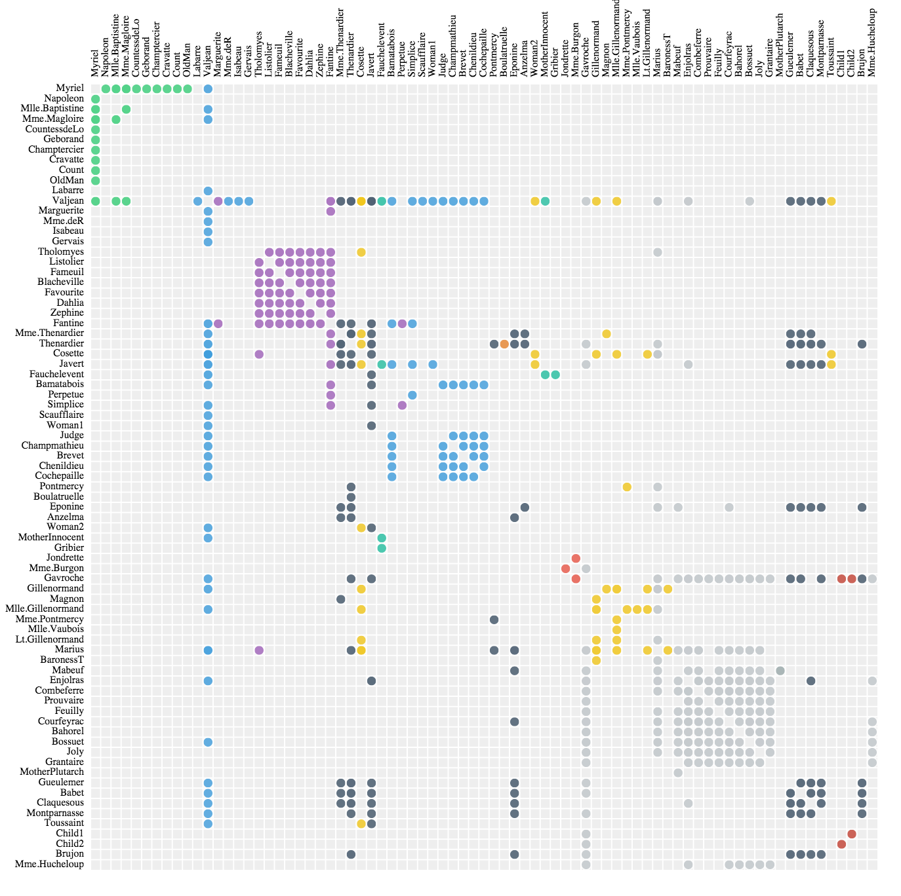

Rappid - shapes
shapes.bpmn
The BPMN plugin provides you with set of Business Process Model and Notation 2.0 shapes. They are designed to be easily configurable with the ui.Inspector plugin.
The plugin consists of flow objects (Activities, Events, Gateways), connection objects (Flows), swim lanes (Pools) and artifacts (DataObjects, Groups, Annotation). It also covers models introduced in version 2.0 as Conversations, Choreographies and Messages.
Install
Include joint.shapes.bpmn.js file to your HTML:
<script src="joint.shapes.bpmn.js"></script>joint.shapes.bpmn.Activity
The Activity attributes:
| activityType | Changes the type of the shape.'task' | 'transaction' | 'event-sub-process' | 'call-activity' |
|---|---|
| content | A text inside the element (i.e 'My Content'). |
| icon | An icon name (list of icons). |
| subProcess | Any truthy value makes the sub-process icon visible (sub-process handling). |
| attrs | Allows to apply custom SVG attributes (fill, stroke, opacity, etc.)'.body' (rect), '.label' (text)
|
Usage:
var activity = new joint.shapes.bpmn.Activity({
attrs: {
'.body': { fill: 'gold', stroke: 'black' },
'.label': { text: 'My Activity' }
},
content: 'A content of the Activity',
activityType: 'transaction'
});joint.shapes.bpmn.Annotation
The Annotation attributes:
| content | A text inside the element (i.e 'My Content'). |
|---|---|
| attrs | Allows to apply custom SVG attributes (fill, stroke, opacity, etc.)'.body' (rect), '.stroke' (path)
|
Usage:
var annotation = new joint.shapes.bpmn.Annotation({
attrs: {
'.body': { fill: 'gold' },
'.stroke': { stroke: 'silver' }
},
content: 'A content of the Annotation'
});joint.shapes.bpmn.Choreography
The Choreography attributes:
| content | A text inside the element (i.e 'My Content'). |
|---|---|
| initiatingParticipant | An index or name of the participant (case-sensitive). ( i.e 'participant 1' ) |
| participants | An array of participant names ( i.e ['participant 1','participant 2'] ). |
| subProcess | Any truthy value makes the sub-process icon visible (sub-process handling). |
| attrs | Allows to apply custom SVG attributes (fill, stroke, opacity, etc.)'.body' (rect), '.label' (text), '.participant-rect' (rect), '.participant-label' (text) |
Usage:
var choreography = new joint.shapes.bpmn.Choreography({
attrs: {
'.body': { fill: 'gold', stroke: 'black' },
'.label': { fill: 'gray', text: 'My Choreography' },
'.participant-rect': { fill: 'silver' }
},
participants: ['partic1', 'partic2', 'partic3'],
initiatingParticipant: 2, // ='partic3',
content: 'A content of the Choreography'
});joint.shapes.bpmn.Conversation
The Conversation attributes:
| conversationType | Changes the type of the shape.'conversation' | 'call-conversation' |
|---|---|
| attrs | Allows to apply custom SVG attributes (fill, stroke, opacity, etc.)'.body' (rect), '.label' (text) |
Usage:
var conversation = new joint.shapes.bpmn.Conversation({
attrs: {
'.body': { fill: 'gold', stroke: 'black' },
'.label': { fill: 'gray', text: 'My Conversation' }
},
conversationType: 'call-conversation'
});joint.shapes.bpmn.DataObject
The Data Object attributes:
| attrs | Allows to apply custom SVG attributes (fill, stroke, opacity, etc.)'.body' (rect), '.label' (text) |
|---|
Usage:
var dataObject = new joint.shapes.bpmn.DataObject({
attrs: {
'.body': { fill: 'gold', stroke: 'black' },
'.label': { fill: 'gray', text: 'My Data Object' }
}
});joint.shapes.bpmn.Event
The Event attributes:
| eventType | Changes the type of the shape.'start' | 'end' | 'intermediate' |
|---|---|
| icon | An icon name (list of icons). |
| attrs | Allows to apply custom SVG attributes (fill, stroke, opacity, etc.)'.body' (circle), '.label' (text) |
Usage:
var event = new joint.shapes.bpmn.Event({
attrs: {
'.body': { fill: 'gold', stroke: 'black' },
'.label': { fill: 'gray', text: 'My Event' }
},
icon: 'message',
eventType: 'end'
});joint.shapes.bpmn.Flow
The Flow as the only one inherits from joint.dia.Link.
The Annotation attributes:
| flowType | Changes the type of the link.'default' | 'conditional' | 'normal' | 'association' | 'conversation' | 'message' |
|---|
Usage:
var flow = new joint.shapes.bpmn.Flow({
source: { id: task.id },
target: { id: annotation.id },
flowType: 'association'
});joint.shapes.bpmn.Gateway
The Gateway attributes:
| icon | An icon name (list of icons). |
|---|---|
| attrs | Allows to apply custom SVG attributes (fill, stroke, opacity, etc.)'.body' (polygon), '.label' (text) |
Usage:
var gateway = new joint.shapes.bpmn.Gateway({
attrs: {
'.body': { fill: 'gold', stroke: 'black' },
'.label': { fill: 'gray', text: 'My Gateway' }
},
icon: 'cross'
});joint.shapes.bpmn.Group
The Group attributes:
| attrs | Allows to apply custom SVG attributes (fill, stroke, opacity, etc.)'.body', '.label', '.label-rect' |
|---|
Usage:
var group = new joint.shapes.bpmn.Group({
attrs: {
'.label-rect': { fill: 'gold', stroke: 'black' },
'.label': { fill: 'gray' }
}
});joint.shapes.bpmn.Message
The Message attributes:
| attrs | '.body' (polygon), '.label' (text) |
|---|
Usage:
var message = new joint.shapes.bpmn.Message({
attrs: {
'.body': { fill:'gold', stroke: 'black' },
'.label': { fill: 'gray' }
}
});joint.shapes.bpmn.Pool
The Pool attributes:
| lanes | An object consist of a label, headerWidth (optional, defaults to 20) and an array of sublanes (optional). A sublane is an object consist of a label, a name (optional), headerWidth (optional) and an array of sublanes (optional). |
|---|---|
| attrs | Allows to apply custom SVG attributes (fill, stroke, opacity, etc.)'.body' (rect), '.header' (rect), '.lane-body' (rect), '.lane-header' (rect), '.blackbox-label' (text) |
Usage:
var pool = new joint.shapes.bpmn.Pool({
attrs: {
'.header': { fill:'gold' },
'.lane-header': { fill:'silver' },
'.myClass .lane-body': { fill: 'goldenrod' } // customize a specific lane body color
},
lanes: {
label: 'My Pool',
sublanes: [
{
label: 'lane 1',
name: 'myClass' // this lane has an unique css class and therefore can be targeted
// in attrs above
},
{
label: 'lane 2',
headerWidth: 40, // sets the header size for `lane2` to 40px
sublanes: [] // it may consist of another sublanes
}
]
}
});Each rendered lane DOM element has class name lane and attribute data-lane-path, that references corresponding lane configuration inside the model's lanes attribute. e.g. data-lane-path="lanes/sublanes/1" for the `lane 2` in the example above. It's useful when one needs to know, what lane a user just clicked on.
paper.on('element:pointerup', function(elementView, evt) {
var pool = elementView.model;
if (pool.get('type') === 'bpmn.Pool') {
var lanePath = $(evt.target).closest('.lane').data('lane-path') || 'lanes';
console.log(pool.prop(lanePath + '/label')); // log the lane label
}
});
joint.shapes.bpmn.icons
The joint.shapes.bpmn.icons namespace includes several icons that can be used within the shapes.
| none | No image. |
|---|---|
| message | |
| user | |
| plus | |
| cross | |
| circle | |
| service |
Usage:
gateway.set('icon', 'circle');
var task = new joint.shapes.bpmn.Activity({ icon: 'user' });
Adding custom icons can be made by inserting them into the joint.shapes.bpmn.icons namespace.
joint.shapes.bpmn.icons['myIcon'] = 'pathToImage'; // or data URI
// later on in the code
gateway.set('icon', 'myIcon');
Sub-process handling
The subProcess value is stored as a data attribute on the sub-process icon (SVG path) element. An interaction with the sub-process icon can be therefore caught and handled on the joint.dia.Paper. In the example bellow the model's subProcess value is shown after an user doubleclicks the icon.
conversation.set('subProcess', 'My sub-process ID');
paper.on('cell:pointerdblclick', function(cellView, evt) {
var subProcess = $(evt.target).data('sub-process');
if (subProcess) {
alert(subProcess);
}
});
// a doubleclick on conversation's sub-process icon will alert 'My sub-process ID'shapes.chart
The Chart plugin provides you with a set of flexible, good looking and interactive charts that you can use in your applications. Note that from the JointJS/Rappid perspective, a chart is just another JointJS cell. This means that you can add it to your diagram, resize it, rotate it, clone it, connect it with other elements, serialize/deserialize it to/from JSON format or export it to SVG, PNG or JPEG. No other library can give you this flexibility!


Install
Include joint.shapes.chart.js file to your HTML:
<script src="joint.shapes.chart.js"></script>Chart Types
The following is a list of currently supported chart types:
shapes.chart.knob
chart.Knob is a great component for displaying numbers in a fancy way. They can also be animated to better visualize changes in values.
Create a basic Knob
The code snippet below creates a basic Knob. The Knob contains only one value.
var graph = new joint.dia.Graph;
var paper = new joint.dia.Paper({ el: $('#paper'), width: 200, height: 200, model: graph });
var knob = new joint.shapes.chart.Knob({
position: { x: 20, y: 20 },
size: { width: 100, height: 100 },
min: 0, max: 100, value: 80,
fill: '#2c97de'
});
graph.addCell(knob);Styling the Knob
To set color of the knob, simply pass fill attribute with color of your choice to the knob constructor.
Moreover, as it is common in JointJS/Rappid, you can style any graphical element of the knob shape. For example, you might want to change
the font family or other font properties of the legend. For this,
you can customize the knob using the usual JointJS approach, via the
attrs object or the attr() method. This means that by just knowing the structure of the
SVG elements the knob is built from, you have full flexibility in styling your knob. Only SVG and
CSS standards are your limits.
{kind=link}
Let's have a look at some examples demonstrating different knob styles. For the full SVG structure of the knob, please see the section Chart SVG Structure in this document. Once you know the structure, it is easy to make CSS selectors referencing the SVG elements that you want to style.
In the example above, we showed how to pass styling in the attrs object when
creating a new knob but you can also change attributes
of an existing knob:
knob.attr('.slice .slice-fill/stroke', 'black')
knob.attr('.slice .slice-fill/stroke-width', 2)
knob.attr('.legend-slice text/font-size', 16)Note that you can use not only fill but a whole range of other SVG attributes
to style your knobs. Moreover, JointJS provides a facility to use gradients and filters.
You can take advantage of them to make your charts even prettier:
var knob = new joint.shapes.chart.Knob({
...
attrs: {
'.data': {
filter: { name: 'dropShadow', args: { dx: 0, dy: 0, blur: 3, color: 'black' } }
}
}
...
});Multiple values
The Knob chart supports multiple series. The value, fill, min and max properties of the Knob constructor
accept arrays. Simply pass more values into the arrays and the Knob chart will automatically render multiple series as in the following example:
var chart = new joint.shapes.chart.Knob({
...
value: [30, 60, 90],
fill: ['#F2C500', '#4CC3D9', '#E94B35'],
min: 0, max: 100
});Tooltips
Tooltips are a great way to show contextual information in your charts. The following demo shows how to use the ui.Tooltip plugin with combination with Knob chart:
IMPORTANT: For tooltips to work, you must have the ui.Tooltip plugin installed.
When setting up tooltips, we no longer work with the chart model. Instead, we request the paper
for the view that represents the chart. This view triggers mousemove, and mouseout
events that we use to hide and show our tooltip. The mousemove event handler gets passed
two important arguments: slice and event.
These two arguments mean the following:
slice- an object with useful information about the slice the event was triggered on. This object contains the following properties:sliceIndex,serieIndex,value,percentage,fill,offset,angle,startAngle,endAngle,outerRadius,innerRadius, andlabel. Most of the time, for tooltips, the important ones arevalueandlabel.event- This is the DOM event object. For tooltips, the two important properties areclientXandclientY. We use these to render the tooltip at a particular position.
All these three arguments help us render our tooltip.
Animation
In general, you can animate any property of the Knob chart (change its value over a certain period of time). In the following demo, we will show how to animate some properties of the Knobs. Using the same technique, you can animate an arbitrary property.
knob.transition('value', 100, { duration: 1000, timingFunction: joint.util.timing.exponential });
knob.transition('pieHole', .4, { duration: 1000, timingFunction: joint.util.timing.exponential });You can find more about JointJS transitions in the API reference.
Knob Options
This is the full list of options that you can pass to the Knob constructor function.
value- a number or an array of numbers (in case of multiple series) representing the value of the knob.fill- a color or an array of colors (in case of multiple series) representing the color of the knob. If multiple series are used, the number of items in thevaluearray andfillarray should match. If they don't match, the first color from thefillarray will be taken wherever a color on the index matching the current serie value is missing.min- a minimum value of the knob.mintogether withmaxspecify the range for thevalue. The same logic for multiple series as described above forfillapplies.max- a maximum value of the knob. The same logic for multiple series as described above forfillapplies.serieDefaults- an object with various properties specifying how series should be rendered. As Knob inherits from Pie chart, all of the properties described in Pie serie object applies here as well.sliceDefaults- an object with various properties specifying how slices should be rendered. As Knob inherits from Pie chart, all of the properties described in Pie slice object applies here as well.
Knob API
chart.Knob
As chart.Knob inherits from chart.Pie all of the chart.Pie API methods apply here as well.
chart.KnobView
As chart.Knob inherits from chart.Pie all of the chart.PieView API methods apply here as well.
chart.KnobView events
As chart.Knob inherits from chart.Pie all of the chart.Pie events apply here as well.
Knob SVG structure
As chart.Knob inherits from chart.Pie, the SVG structure described in chart.Pie SVG structure applies here as well.
shapes.chart.matrix
chart.Matrix is great for displaying co-occurrences in a matrix.

Create a Matrix Chart
The code snippet below creates a basic Matrix chart with three rows and three columns.
var graph = new joint.dia.Graph;
var paper = new joint.dia.Paper({ el: $('#paper'), width: 500, height: 500, model: graph });
var matrix = new joint.shapes.chart.Matrix({
position: { x: 50, y: 50 },
size: { width: 170, height: 170 },
cells: [
[{ fill: 'red' }, { fill: 'black' }, { fill: 'black' }],
[{ fill: 'black' }, { fill: 'red', rx: 50, ry: 50 }, { fill: 'black' }],
[{ fill: 'black' }, { fill: 'black' }, { fill: 'red' }]
],
labels: {
rows: [{ text: '1' }, { text: '2' }, { text: '3' }],
columns: [{ text: 'A' }, { text: 'B' }, { text: 'C' }],
}
});
graph.addCell(matrix);Styling the Matrix
All the cells in the matrix are SVG rectangles. The objects in the cells array
can contain any SVG attributes that will be used to style those rectangles. The most
common one is fill which allows you to set the fill color of the rectangle. Another
useful ones are radii rx and ry which can effectively turn the rectangles
into circles if the radii specified are big enough (as we saw in the above example).
However, there is more we can do to make our matrices much prettier. For example, we can use opacity
to make our cells semi-transparent, set stroke, style labels, grid lines or
the background of the matrix.
Real-world example
In our previous examples, we were trying to show the basics of working with Matrix chart. However, the real power of Matrix charts is to show co-occurrences. The following chart is somewhat bigger and shows the relationships from the Les Miserables book by Victor Hugo. The demo also integrates the ui.Tooltip plugin to show how we can display tooltips when cells are hovered.
Conway's Game of Life example
The following example shows the great Conway's Game of Life cellular automaton.
Matrix Options
This is the full list of options that you can pass to the Matrix constructor function.
cells- an array of cells each being an object that can contain SVG attributes for the cell rectangle. If a cell is undefined, it is not rendered. If the matrix is sparse, setting empty cells to an undefined value significantly improves performance when rendering large matrices.labels- an object containingrowsandcolumnsarrays. These arrays contain objects defining the text for the labels on the respective axis. The most important ones aretext(the actual label),font-size,font-familyandfillbut you can use any other SVG attribute for styling the labels.
Matrix SVG structure
Knowing the SVG structure of the matrix allows you to further style the matrix via the attrs object
or attr() method.
shapes.chart.pie
chart.Pie is a great chart type for displaying numerical proportions. Donut charts, multiple series, animation, changing look & feel of any part of the chart, drop shadows and other filters and gradients are all supported.
Create a basic Pie chart
The code snippet below creates a basic Pie chart. The pie chart contains only one serie and its legend is displayed by default.
var graph = new joint.dia.Graph;
var paper = new joint.dia.Paper({ el: $('#paper'), width: 500, height: 500, model: graph });
var chart = new joint.shapes.chart.Pie({
position: { x: 50, y: 10 },
size: { width: 100, height: 100 },
series: [ { data: [
{ value: 40, label: 'Organic', fill: '#8bce5d' },
{ value: 20, label: 'Email', fill: '#53abdd' },
{ value: 20, label: 'Social', fill: '#c377b1' },
{ value: 20, label: 'Referral', fill: '#ffe891' }
]}]
});
graph.addCell(chart);Styling Pie Slices
Normally, you can just pass a color of each slice in the fill property of the slice
object as you can see in the example above. However, as it is common in JointJS/Rappid,
you can style any graphical element of the chart shape. For example, you might want to change
the font family or other font properties of the slice labels, or the legend. For this,
you can customize the chart using the usual JointJS approach, via the
attrs object or the attr() method. This means that by just knowing the structure of the
SVG elements the chart is built from, you have full flexibility in styling your chart. Only SVG and
CSS standards are your limits. Following the JointJS
philosophy, we don't try to invent special parameters. Instead, we try to follow SVG and CSS standards
as much as we can.
{kind=link}
Let's have a look at one snippet of the SVG structure of the charts that is used to render a slice. For the full SVG structure of charts, please see the section Chart SVG Structure in this document. Once you know the structure, it is easy to make CSS selectors referencing the SVG elements that you want to style. We'll show an example of that below. the SVG structure of one serie is the following:
<g class="slice serie-[index of the serie] slice-[index of the slice]">
<path class="slice-fill">
<path class="slice-border">
<text class="slice-inner-label">
</g>Knowing that, we can, for example, change color and size of the text label of the first slice:
var chart = new joint.shapes.chart.Pie({
... /* the same as before */ ...
attrs: {
'.slice-0 .slice-inner-label': { fill: 'black', 'font-size': 20 }
}
});In the example above, we showed how to pass styling in the attrs object when
creating a new chart but you can also change attributes
of an existing chart:
chart.attr('.slice-0 .slice-inner-label/fill', 'blue')Note that you can use not only fill but a whole range of other SVG attributes
to style your charts. Moreover, JointJS provides a facility to use gradients and filters.
You can take advantage of them to make your charts even prettier:
var chart = new joint.shapes.chart.Pie({
...
series: [ { data: [
{ value: 40, label: 'Organic', fill: {
type: 'linearGradient', stops: [
{ offset: '0%', color: '#b4f200' },
{ offset: '80%', color: '#759d00' }
],
attrs: { x1: '0%', y1: '0%', x2: '0%', y2: '100%' }
} },
...
]}],
...
});Multiple series
The Pie chart supports multiple series. Simply add more series to the series
array. This is useful for creating pie charts that, for example, compare data (from different sources, periods, ...).
var chart = new joint.shapes.chart.Pie({
...
series: [
{ label: '2014', data: [
{ value: 20.3, label: 'IE', fill: '#4CC3D9' },
{ value: 18.3, label: 'Firefox', fill: '#F16745' },
{ value: 34.2, label: 'Chrome', fill: '#7BC8A4' }
]},
{ label: '2013', data: [
{ value: 27.5, label: 'IE', fill: '#4CC3D9' },
{ value: 20, label: 'Firefox', fill: '#F16745' },
{ value: 30, label: 'Chrome', fill: '#7BC8A4' }
]},
...
],
...
});All series have automatically generated legends. This legend is interactive. Based on the effect you defined, the user can either hover or click on the labels in the legend and offset (or enlarge) the associated slices in the chart.
Exploding a Slice
Slices in the Pie chart can be separated from the rest (exploded) by setting the
offset property of the slice object:
Donut Charts
The difference between Donut and Pie charts is very small, the only thing that differs
is the hole inside the pie. While there is no hole for Pie chart, Donut charts have
a hole that can be set arbitrarily. The pieHole property can
either be a floating point number between 0 and 1, in which case
the size of the hole is proportional to the radius of the pie chart. If the pieHole
property is bigger than 1, it is considered to be an absolute size of the
hole in pixels:
Tooltips
Tooltips are a great way to show contextual information in your charts. The following demo shows how to use the ui.Tooltip plugin with combination with Pie chart:
IMPORTANT: For tooltips to work, you must have the ui.Tooltip plugin installed.
When setting up tooltips, we no longer work with the chart model. Instead, we request the paper
for the view that represents the chart. This view triggers mousemove, and mouseout
events that we use to hide and show our tooltip. The mousemove event handler gets passed
two important arguments: slice and event.
These two arguments mean the following:
slice- an object with useful information about the slice the event was triggered on. This object contains the following properties:sliceIndex,serieIndex,value,percentage,fill,offset,angle,startAngle,endAngle,outerRadius,innerRadius, andlabel. Most of the time, for tooltips, the important ones arevalueandlabel.event- This is the DOM event object. For tooltips, the two important properties areclientXandclientY. We use these to render the tooltip at a particular position.
Legend
The chart legend is auto-generated and contains labels and colors of all the data series. The legend is interactive by default and allows the user to highlight the slices displayed in the chart while hovering the legend items. This sections shows you how you can customize the legend and its position.
The legend is rendered as an SVG group element with the class legend. Inside this group,
we have legend-items each containing an SVG circle and text elements. Please refer to the
Chart SVG structure section for the full SVG structure of the chart.
This is all you need to know to be able to style the legend. By default, the lenged is
positioned on the top right corner of the pie chart.
The styling of the legend item text (name of the associated slice) and the legend item circle
can be done the usual JointJS way, through standard SVG attributes as you can see below. Another
useful properties for styling the legend items are legendLabelLineHeight,
legendLabelMargin and labelLineHeight. The first two
can be defined in the slice objects (or in the sliceDefaults for all slices)
while the third one is specific to the legend item for the serie and therefore
is defined in the serie object (or in serieDefaults).
// Positioning to the top (80px above the chart and centered).
chart3.attr('.legend/ref-y', -80);
chart3.attr('.legend/ref-x', .5);
chart3.attr('.legend/x-alignment', -.5);
// Styling of the legend text and circle.
chart3.prop('sliceDefaults/legendLabel', '{label} is {value}%');
chart3.prop('sliceDefaults/legendLabelLineHeight', 8);
chart3.prop('sliceDefaults/legendLabelMargin', 25);
chart3.attr('.legend-slice text/fill', '#336699');
chart3.attr('.legend-slice text/font-weight', 'bold');
chart3.attr('.legend-slice text/text-decoration', 'underline');
chart3.attr('.legend-slice text/font-size', 13);
chart3.attr('.legend-slice circle/r', 7);
chart3.attr('.legend-slice circle/stroke', 'black');
chart3.attr('.legend-slice circle/stroke-width', 1);Animation
In general, you can animate any property of the Pie chart (change its value over a certain period of time). In the following demo, we will show how to animate some properties of the Pie chart. Using the same technique, you can animate an arbitrary property.
chart.transition('pieHole', .6, { duration: 700 });
chart.transition('series/0/data/0/offset', 50, { duration: 700 });
chart.transition('attrs/.slice-inner-label/font-size', 30, { duration: 700 });
chart.transition('series/0/data/0/fill', '#ff0000', {
duration: 700,
valueFunction: joint.util.interpolate.hexColor
});You can find more about JointJS transitions in the API reference.
Effects
The effect applied when the user either clicks or hover a slice in the pie can
be customized. There are two actions that trigger an effect (onClickEffect
and onHoverEffect) and two types of effects: enlarge and
offset. Try to interact (hover/click slices) with the pie chart in the demo below to see
the different effects applied.
var chart = new joint.shapes.chart.Pie({
...
sliceDefaults: {
onClickEffect: { type: 'offset', offset: 20 },
onHoverEffect: { type: 'enlarge', scale: 1.5 }
}
});Chart Options
This is the full list of the options that you can pass to the chart constructor function.
series- an array of series.pieHole- the size of the hole in the center of the pie. If the number is in the0..1interval, it is considered to be proportional to the pie radius. If it is bigger than1, it is considered to by the absolute radius in pixels.serieDefaults- an object with various properties specifying how series should be rendered. All properties of this object are overruled by properties of the same names in the serie object.sliceDefaults- an object with various properties specifying how slices should be rendered. All properties of this object are overruled by properties of the same names in the slice object.
Serie
These are items of the series array.
name- the name of the serie. This name is added as a CSS class to the serie SVG element. You can take advantage of this CSS class for further styling.label- the serie label (used in the auto-generated legend)data- an array of slicesstartAngle- the angle in degrees the serie slices start to draw.degree- the total degre of the serie in the pie.showLegend-trueif the legend for the serie should be shown,falseotherwise.labelLineHeight- the line height of the serie label in the auto-generated legend
When the above properties are defined in the serieDefaults options object,
they will be applied to all the series unless overruled by properties in the serie object.
Slice
These are items of the data array of the serie object.
value- a number specifying the value for the slice data point.label- the label for the slice. This lable is used in the legend.fill- the fill color (or gradient) of the slice.innerLabel- the template for the label rendered inside the slice. The format for the template is derived from the Pythonformat()function. Properties are enclosed in curly brackets and formats can be specified using the Python Format Specification Mini-Language. For example:
See the API reference for more examples on number formatting. You can use the following properties in your template:'{label}: {value:.2f}' // 'My Slice: 2.26', i.e. value is rounded to two decimal numbers.value,label,percentage,angle,startAngleandendAngle.innerLabelMargin- the gap between the middle of the text label and the serie border in the pie. If value between0...1is used, it is considered to be proportional to the outer radius. If the number is bigger than1, it is considered to be an absolute distance in pixels.legendLabel- the template for the label for the slice used in the legend. Uses the same formatting asinnerLabel.legendLabelLineHeight- the line height of the slice label in the legend.legendLabelMargin- the gap between the circle representing the slice color and the slice label in the legend.offset- the offset of the slice. This option is useful forexploding
slices and makes sense only for the outermost slices of the pie. If offset is between0...1is used, it is considered to be proportional to the outer radius. If the number is bigger than1, it is considered to be an absolute distance in pixels.onClickEffect- the effect applied when the user clicks on the slice. This is an object with the propertytypethat can be either'enlarge'or'offset'. If'enlarge'type is used, the object can have an additional propertyscalewhich is the scaling factor for the slice enlargement. If'offset'type is used, the object can have an additional propertyoffsetwhich is the offset of the slice.onHoverEffect- the effect applied when the user hovers with his mouse cursor over the slice. This is an object with the propertytypethat can be either'enlarge'or'offset'. If'enlarge'type is used, the object can have an additional propertyscalewhich is the scaling factor for the slice enlargement. If'offset'type is used, the object can have an additional propertyoffsetwhich is the offset of the slice.
When the above properties are defined in the sliceDefaults options object,
they will be applied to all the slices unless overruled by properties in the slice object.
Chart API
chart.Pie
| addSlice(slice, serieIndex [, opt]) | Append a slice slice to the serie identified by serieIndex. opt
can be an arbitrary object that is passed to the onchange handlers of the JointJS element.
|
|---|---|
| editSlice(slice, sliceIndex, serieIndex [, opt]) | Replace a slice in the pie by a new slice. The serie is identified by serieIndex in which
the slice at index sliceIndex will be replaced. opt
can be an arbitrary object that is passed to the onchange handlers of the JointJS element.
|
chart.PieView
To access the view for a pie chart, use: paper.findViewByModel(chart).
| clickSlice(sliceIndex, serieIndex) | Simulate a click on the slice. Note that this triggers the effects that
you defined in the onClickEffect in the slice object.
|
|---|---|
| mouseOverSlice(sliceIndex, serieIndex) | Simulate a mouse over on the slice. Note that this triggers the effects that
you defined in the onHoverEffect in the slice object.
|
chart.PieView events
To set a listener for the pie view events, use: paper.findViewByModel(chart).on('mousemove', myFunction).
| mousemove | Continuously triggered when the user hovers over a slice. The handler is
passed slice and event objects.
|
|---|---|
| mouseover | Triggered when the user hovers over a slice. The handler is
passed slice and event objects.
|
| mouseout | Triggered when the user leaves a slice. The handler is
passed slice and event objects.
|
| click | Triggered when the user clicks a slice. The handler is
passed slice and event objects.
|
Chart SVG structure
The following is the chart SVG structure that you can take as a reference when styling chart elements.
<g class="background">
<rect/>
<text/>
</g>
<g class="data">
<g class="slice serie-[index of the serie] slice-[index of the slice] [serie name?] [slice name?] [outer?] [hover?] [clicked?]" data-serie="[index of the serie]" data-slice="[index of the slice]" data-value="[value of the slice]">
<path class="slice-fill"/>
<path class="slice-border"/>
<text class="slice-inner-label"/>
</g>
<!-- ... possibly more slices -->
</g>
<g class="foreground">
<rect/>
<text class="caption"/>
<text class="subcaption"/>
<g class="legend">
<g class="legend-items">
<g class="legend-serie [serie name?]" data-serie="[index of the associated serie]">
<text/>
</g>
<g class="legend-slice [slice name?]" data-serie="[index of the associated serie]" data-slice="[index of the associated slice]">
<circle/>
<text/>
</g>
<!-- ... possibly more legend items -->
</g>
</g>
</g>Selector examples
chart.attr('.legend-slice text/text-decoration' , 'underline') // Underline a legend label.
chart.attr('.legend-slice text/font-size' , 13) // Set a font size of all the legend texts for slices.
chart.attr('.slice-fill/stroke' , 'gray') // Set a stroke color of a slice.
chart.attr('.slice-fill/stroke-width' , 1) // Set a stroke width of a slice.
chart.attr('.slice-3 .slice-fill/filter', { name: 'dropShadow', args: { dx: 2, dy: 2, blur: 3 } })shapes.chart.plot
The chart.Plot chart allows you to create Line, Bar and Area charts or their combinations.
var graph = new joint.dia.Graph;
var paper = new joint.dia.Paper({ el: $('#paper'), width: 500, height: 500, model: graph });
var chart = new joint.shapes.chart.Plot({
position: { x: 50, y: 50 },
size: { width: 300, height: 100 },
series: [ { name: 'myserie', data: [{ x: 1, y: 2 }, { x: 2, y: 3 }, { x: 3, y: 2 }, { x: 4, y: 3 }] } ]
});
graph.addCell(chart);Series styling
All the elements of the chart can be customized using the usual JointJS approach, via the
attrs object or the attr() method. This means that by just knowing the structure of the SVG elements
the chart is built from, you have full flexibility in styling your chart. Following the JointJS
philosophy, we don't try to invent special parameters. Instead, we try to follow SVG and CSS standards
as much as we can in the way things are styled.
Let's have a look at one snippet of the SVG structure of the charts that is used to render a serie. For the full SVG structure of charts, please see the section Chart SVG Structure in this document. Once you know the structure, it is easy to make CSS selectors referencing the SVG elements that you want to style. We'll show an example of that below. the SVG structure of one serie is the following:
{kind=link}
<g class="serie [name of the serie]">
<path>
<g class="points">
<g class="point">
<circle>
<text>
</g>
<!-- ... possibly more points -->
</g>
</g>Knowing that, we can, for example, set the stroke color of the serie SVG path like this:
var chart = new joint.shapes.chart.Plot({
position: { x: 50, y: 50 }, size: { width: 300, height: 100 },
series: [ { name: 'myserie', data: [{ x: 1, y: 2 }, { x: 2, y: 3 }, { x: 3, y: 2 }, { x: 4, y: 3 }] } ],
attrs: {
'.myserie path': { stroke: 'green', 'stroke-width': 3 }
}
});In the example above, we showed how to pass styling when creating a new chart but you can also change attributes of an existing chart:
chart.attr('.myserie path/stroke', 'red');Note that not only you can change strokes but you can also use other SVG
presentational attributes. An interesting one is the fill attribute. By setting the fill
attribute on our serie path, we effectively render our serie as an Area chart. In the
following demos, we even use the JointJS gradients
for the fill attribute making our charts even prettier:
Multiple series
The Chart plugin supports multiple series. Simply add more series to the series
array. As you might have noticed, series objects have the name
property. This name is then set as a class name on the serie SVG grouping element. This allows
you to style series based on their names as we've already shown in the previous demos. In the following
example, we plot multiple series and style them differently based on their names.
All series have automatically generated legends. This legend is interactive. You can click on the labels in the legend and turn off and on the rendering of the associated serie in the chart.
Markings
Markings (a.k.a trend lines) are vertical or horizontal lines or rectangles highlighting a certain area in the chart.
You can have an unlimited number of markings in your charts. Markings are defined in the markings array with
coordinates of the start and end of the marking.
The following is a snippet from the options passed to the chart constructor that defines four markings and styles them. For the full source code, please follow the link below the demo.
markings: [
{ name: 'target', start: { y: 3.2 }, label: 'My Target' },
{ name: 'current', start: { x: 4 } },
{ name: 'previous', start: { x: 2.8 }, end: { x: 3.2 } },
{ name: 'next', start: { x: 4.8, y: 3.5 }, end: { x: 5.2, y: 2.5 } }
],
attrs: {
'.marking.target rect': { fill: 'red' },
'.marking.next rect': { fill: '#3498DB', rx: 1000, ry: 1000, 'fill-opacity': .6, stroke: 'black' },
'.marking.previous rect': { fill: '#27AE60', 'fill-opacity': .8 }
}Guidelines
Guidelines are lines that appear when you hover over the chart with your mouse pointer. They help the user orient himself in the chart. Guidelines are disabled by default but can be very easily turned on.
Here is the snippet from the attrs object that enables guidelines:
attrs: {
'.guideline': { 'stroke-dasharray': '3,1', 'stroke-width': .8, display: 'block' },
'.x-guideline': { stroke: 'red' },
'.y-guideline': { stroke: 'green' }
}Hover over the chart to see the guidelines following your mouse cursor.
Tooltips
Tooltips are a great way to show contextual information in your charts. The JointJS Chart plugin
also provides a facility to get to the closest points to the mouse cursor from all the series data points.
Moreover, the chart view offers the renderPoint() method that makes it easy to display
a point marker at the place of any data point from any serie. Let's start with a demo and then
see how this can be implemented.
IMPORTANT: For tooltips to work, you must have the ui.Tooltip plugin installed.
When setting up tooltips, we no longer work with the chart model. Instead, we request the paper
for the view that represents the chart. This view triggers mouseover and mouseout
events that we use to hide and show our tooltip. The mouseover event handler gets passed
three important arguments: dataPoint, clientPoint and closestPoints.
These three arguments mean the following:
dataPoint- the point in the chart area. This point is interpolated based on the minimum and maximum x and y values and the position of the mouse cursor in the chart.clientPoint- basically the mouse eventclientXandclientYcoordinates but transformed to the coordinate system of the chart view.closestPoints- an array of from each data serie that are the closest points to the mouse cursor. Each object in this array is of the form:{ x: [number], y: [number], serie: [serie object] }.
All these three arguments help us render our tooltip. Here is the relevant code snippet from the above demo:
Legend
The chart legend is auto-generated and contains labels and colors of all the data series. The legend is also interactive by default and allows the user to turn on and off data series displayed in the chart. This sections shows you how you can customize the legend and its position and also how to turn series on and off programmatically.
The legend is rendered as an SVG group element with the class legend. Inside this group,
we have legend-items each containing an SVG circle and text elements. Please refer to the
Chart SVG structure section for the full SVG structure of the chart.
This is all you need to know to be able to style the legend. Moreover, we have prepared a syntactic
sugar method (legendPosition()) for positioning the legend so that you don't have to deal with the low-level
positioning using the JointJS special attributes:
chart.legendPosition('nw');Also, the styling of the legend item text (name of the associated serie), the legend item circle and the their look in the disabled state (when the serie is turned off) can be done the usual JointJS way:
chart.attr('.legend-item text/fill', 'red');
chart.attr('.legend-item circle/r', 6);
chart.attr('.legend-item circle/stroke', 'black');
chart.attr('.legend-item.disabled text/fill', 'blue');Real-time data
The Channel plugin supports real-time data plotting out-of-the-box. Every change to the series
array triggers an update of the chart view and new series are rendered. However, the Chart plugin
provides two methods that are handy when dealing with real-time data: addPoint(p, serieName, op) and
lastPoint(serieName). Use addPoint() to add a new data point to a serie
identified by serieName. This method automatically triggers an update and the associated view is re-rendered:
setInterval(function() {
chart.addPoint({ x: chart.lastPoint('myserie').x + 1, y: Math.random() * 2 + 2 }, 'myserie', { maxLen: 6 });
}, 600);Fixed axis
By default, the chart plugin automatically choses the minimum and maximum values on each of the axis
based on the minimum/maximum data points. By specifying min and max values
in the axis object, you can define the precise minimum and maximum values
for the axis:
var chart = new joint.shapes.chart.Plot({
...
axis: {
'y-axis': { min: -3, max: 10 },
'x-axis': { min: -5, max: 10 }
}
...
})Time series
By going through the previous sections, you already know all you need to be able to plot time series. There is nothing special about plotting time series except of being able to format the data/times on the x axis. For that, the Chart plugin allows you to define your own formatting functions for the tick labels. This means that for representing time series data, your data point x coordinates should be in the UNIX time format. Then you just provide a function that formats this timestamp into a more readable representation:
var chart = new joint.shapes.chart.Plot({
...
series: [
{ name: 'temp', data: [{ x: 1397560472344, y: 21.5 }, ... ] }
],
axis: {
'x-axis': {
tickFormat: function(t) {
var d = new Date(t);
return (d.getMonth() + 1) + '/' + d.getDate() + '/' + d.getHours() + '/' + d.getMinutes()
}
},
'y-axis': {
tickFormat: function(v) { return joint.util.format.number('.1f', v) + ' dgC'}
}
}
...
});TIP: We recommend using the great Moment.js JavaScript library for parsing, validating, manipulating and formatting dates.
Bar series
The chart plugin supports bar series. To turn a serie to a bar serie, just set the bars option to true:
var chart = new joint.shapes.chart.Plot({
...
series: [
{ name: 'myserie', bars: true, data: [{ x: 2, y: 20 }, ... ] }
]
...
});There is couple of recommended settings when working with bar charts, namely padding, align and barWidth.
padding is not specific to bar charts but is especially useful when using this kind of chart. This is because when bars are rendered,
they must be aligned to a certain value on the x axis. By default, the top-left corner of each bar is at the position of the associated x
data point value. That means that without any padding, the last bar won't be visible (only a very tiny fraction of its left border). Therefore,
we have to set at least right padding to make the bar visible. The align property of bars
object controls the alignment of the bars with respect to the associated x data point value. Possible values are "left" (the default),
"right" and "middle". barWidth controls the width of the bars. If the value is a floating point number between 0
and 1, it is used to set the final width of each bar proportionally to the calculated width. If the value is an integer higher than 1, it
is considered to be an absolute width in pixels. For a full description of the bar options, please see the Serie options object, especially
the bars object.
Bar & Line series intermixed
Bar and Line series can be rendered together as part of one chart.
var chart = new joint.shapes.chart.Plot({
// ...
series: [
{ name: 'mybars', bars: { barWidth: .7 }, data: [{ x: 1, y: 15 }/* ... */ ] },
{ name: 'myotherbars', bars: { barWidth: .7 }, data: [{ x: 1, y: 12 }/* ... */ ] },
{ name: 'myline', interpolate: 'bezier', data: [{ x: 1, y: 20 }/* ... */ ] }
]
// ...
});As you can see in the code above, we have two bar series and one line serie as part of one chart. It is important to note that if there are more than one bar serie in the chart, by default, the bars of the different series will be rendered one over another. For cases where this is not desirable, you can offset the bars of one of the series as shown in the demo below:
As you might have noticed in the demo above, negative values for the series are sully supported.
Chart Options
This is the full list of the options that you can pass to the chart constructor function.
series- an array of series.markings- an array of markings. Markings can be both vertical or horizontal lines or rectangles.axis- axis definition. Currently, the object can contain onlyx-axisandy-axisproperties representing one axis.
Serie
These are items of the series array.
name- the name of the serie. This name is added as a CSS class to the serie container (the SVG group element).label- the serie label (used in the auto-generated legend)data- an array of data points of the form{ x: [number], y: [number] }interpolate- the interpolation method. Interpolation methods include:linear- the default interpolation.bezier- interpolation with a bezier curve.step- step functionstepBefore- step functionstepAfter- step function
bars- controls bar series. If set totrue, the series will be rendered as a bar serie using default options. You can override the default options by settingbarsto an object that can have the following properties (all are optional):align- the alignment of the bars with respect to the x data point values. Possible values are"middle"(default),"left"and"right".barWidth- controls the width of the bars. If the value is a floating point number between0and1, it is used to set the final width of each bar proportionally to the calculated width. The calculated width is computed such as, for a consecutive x values on the axis, the sum of the widths of all the bars equals the width of the chart area. If the value is an integer higher than1, it is considered to be an absolute width in pixels.top-rx- the top x radius of the bars. Together with thetop-ryvalue, this allows you to define border radius for the bars.top-ry- the top y radius of the bars.
showLegend- controls whether a legend item for the serie should be shown or not. Iffalse, the legend item will be skipped. If it is a function, it should returntrueif the legend item should be shown,falseotherwise. The function has the following signature:function(serie, stats), whereserieis the serie object andstatsis an object that holds some interesting statistics for the serie useful for deciding whether to show the legend item or not. The statistics are:decreasingX,decreasingY,maxX,maxY,minX,minY,nonDecreasingXandnonDecreasingY.legendLabelLineHeight- controls the legend label line height. It defaults to16.
Markings
These are items of the markings array.
start- the start coordinate of the marking. An object of the form{ x: [number], y: [number] }. If onlyxis given, a vertical marking is rendered at that x-coordinate. If onlyyis given, a horizontal marking is rendered at thatycoordinate.end- the end coordinate of the marking. An object of the form{ x: [number], y: [number] }. If onlyxis given, a vertical marking is rendered at that x-coordinate. If onlyyis given, a horizontal marking is rendered at thatycoordinate. If bothstartandendobjects are defined, a rectangular marking starting atstartcoordinates ending atendcoordinates is rendered. (TIP: if you style your marking with highrxandryvalues, you can make the marking look like a circle.)name- the name of the marking. This name is added as a CSS class to the marking container (the SVG group element). This makes it easier to style it.label- the marking label. This is an auto-positioned text element.attrs- additional SVG attributes that will be set on the marking container SVG element. This is sometimes useful if you want to store additional data associated with the marking in its DOM element. For example, when using tooltips.
Axis
These are properties of the axis object.
tickFormat- a format of the tick labels. This can be either a string in the Python Format Specification Mini-Language or a function that takes the value the tick represents and returns the label for that tick. Example:// floating point value with one digit after the decimal point { axis: { 'x-axis': { tickFormat: '.1f' } } } // currency { axis: { 'y-axis': { tickFormat: function(v) { return '$' + joint.util.format.number('.2f', v) } } }tickSuffix- a string or a function that will be used as a suffix of the resulting formatted tick label. If it is a function, it is passed the tick value as an argument.min- the precise minimum value for the scale. Specifyingminandmaxvalues for axis prevents the chart plugin to automatically choose the minimum and maximum values for the axis, which is the default. See the Fixed axis section for more information.max- the precise maximum value for the scale.ticks- the number of ticks on the axis. Default is10.tickStep- the modulus for tick display in the x axis. Default is1, therefore, all ticks are displayed. Set this value to a higher number to filter out ticks. For example, setting this number to10makes the axis render only every 10-th tick. Note that this option only works for thex-axis.
Chart API
| legendPosition(position [, opt]) | Set position of the legend. position is a string that can be one of
n, nw, w, sw, s,
se, e, ne, nne, nn,
nnw, nnww, nww, ww, sww,
ssww, ssw, ss, sse, ssee,
see, ee, nee, nnee. See the
Legend section for more info. opt.padding can be used
to set the distance between the legend and the chart edges. The default is 10px.
|
|---|---|
| addPoint(p, serieName [, opt]) | Append point p to the serie identified by serieName. If opt.maxLen
is set and the number of points in the serie is higher than maxLen, shift the data in the serie.
|
| lastPoint(serieName) | Return the last point in the serie identified by serieName. |
| firstPoint(serieName) | Return the first point in the serie identified by serieName. |
chart.PlotView
To access the view for a plot chart, use: paper.findViewByModel(chart).
| renderPoint(p, serie) | Render a point at the coordinates defined in p. serie
is the object from the chart.Plot series array and
defines the serie for which the point should be rendered.
Return the SVG DOM element for the point. See the Tooltips section on why this
method is useful.
|
|---|---|
| getSerieColor(serieName) | Return the color used to draw the serie identified by serieName. |
| hideSerie(serieName) | Hide serie identified by serieName. |
| showSerie(serieName) | Show serie identified by serieName. |
| closestPoints(x) | Return an array of the closest points from all the series in the chart for a given x coordinate. |
Chart SVG structure
The following is the chart SVG structure that you can take as a reference when styling chart elements.
Selector examples
chart.attr('.caption/text', 'My Chart') // Set chart caption.
chart.attr('.subcaption/text', '2014') // Set chart sub caption.
chart.attr('.caption/fill', 'red') // Set chart caption text color.
chart.attr('.caption/font-size', 20) // Set chart caption font size.
chart.attr('.caption/ref-x, 10) // Move chart caption 10px from the left edge of the chart.
chart.attr('.guideline/display, 'block') // Display guidelines.
chart.attr('.x-axis .tick line/stroke' , 'green') // Set the color of the ticks on the x axis.
chart.attr('.y-axis .tick text/fill' , 'blue') // Set the color of the tick labels on the y axis.
chart.attr('.legend-item[data-serie="myserie"]/text-decoration' , 'underline') // Underline a legend label.
chart.attr('.point/display' , 'none') // Hide the data points.
chart.attr('.data .myserie .bar[data-x="5"]/fill' , 'blue') // Set blue fill color for only the bar with x value 5.